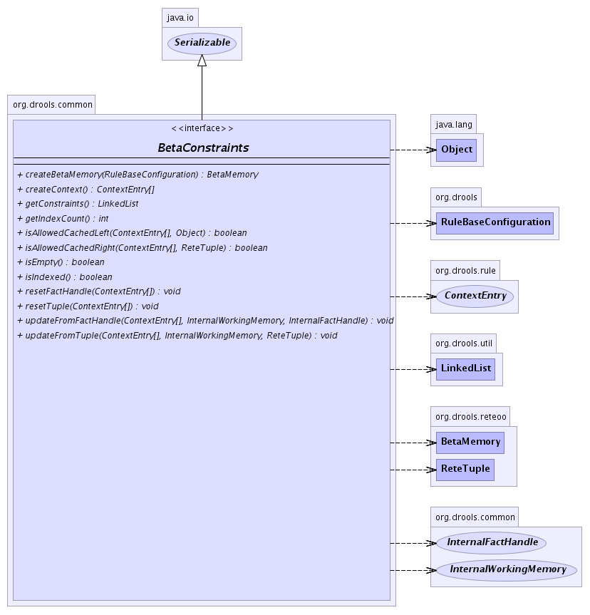

org.drools.common
Interface BetaConstraints
- All Superinterfaces:
- java.io.Serializable
- All Known Implementing Classes:
- DefaultBetaConstraints, DoubleBetaConstraints, EmptyBetaConstraints, QuadroupleBetaConstraints, SingleBetaConstraints, TripleBetaConstraints
public interface BetaConstraints
- extends java.io.Serializable
-
- 
createContext
ContextEntry[] createContext()
updateFromTuple
void updateFromTuple(ContextEntry[] context,
InternalWorkingMemory workingMemory,
ReteTuple tuple)
updateFromFactHandle
void updateFromFactHandle(ContextEntry[] context,
InternalWorkingMemory workingMemory,
InternalFactHandle handle)
isAllowedCachedLeft
boolean isAllowedCachedLeft(ContextEntry[] context,
java.lang.Object object)
isAllowedCachedRight
boolean isAllowedCachedRight(ContextEntry[] context,
ReteTuple tuple)
getConstraints
LinkedList getConstraints()
isIndexed
boolean isIndexed()
getIndexCount
int getIndexCount()
isEmpty
boolean isEmpty()
createBetaMemory
BetaMemory createBetaMemory(RuleBaseConfiguration config)
resetTuple
void resetTuple(ContextEntry[] context)
resetFactHandle
void resetFactHandle(ContextEntry[] context)